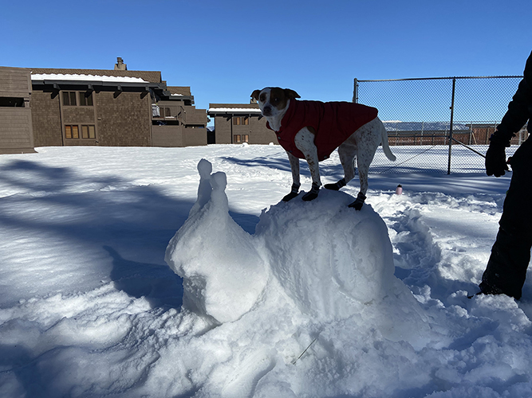
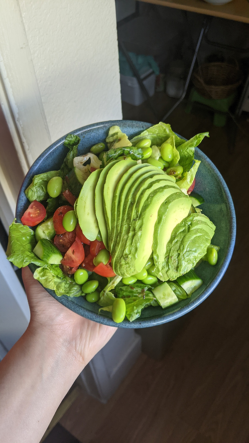

Analysis

This image is interesting because I believe there is enough going on to allow the viewer to stare at the photo for longer than a simple glimpse. Firstly, my dog is wearing shoes and a jacket, and she is also standing on a mound of snow — but not just any mound, it is a snow snail. Also, in the background, it looks like someone half-buried their water bottle in the snow to keep it from tipping over. There are cabins in the background as well, along with some wire fencing. The overall image has a cool temperature, which of course makes sense because it is located in the snow. This image relates to the topic of my collection because my collection is about my dog, Hazel. I think my collection tells the viewer that I am someone who either loves dogs or animals in general.

This is Julia’s image. It looks to be a salad with lettuce, cucumbers, cherry tomatoes, edamame, avocado, and what looks like balsamic vinegar. The bowl is blue and looks like it is ceramic. Someone is holding the bowl, which I would assume is Julia. In the background, there is a desk with various objects beneath it. The floor is wood and the walls are white/cream. For some reason I get the feeling that we are next to a bathroom… Perhaps that is the most mysterious aspect of this image. The most interesting aspect of this image is probably the focus of the image — which would also be the most obvious — which is the salad. Of the components of the salad, the avocado stands out the most because its at the top of the salad and takes up a good portion of what we can see of the salad. The colors within the salad are mostly shades of green, with red contrast from the cherry tomatoes. The shapes within the salad are very organic, and the image gives me the impression that Julia is a healthy person. Because it looks like the salad is dressed with balsamic vinegar (which is very yummy) I am inclined to believe that I would enjoy this kind of salad… minus the avocados. It makes me hungry. I am now craving a salad.